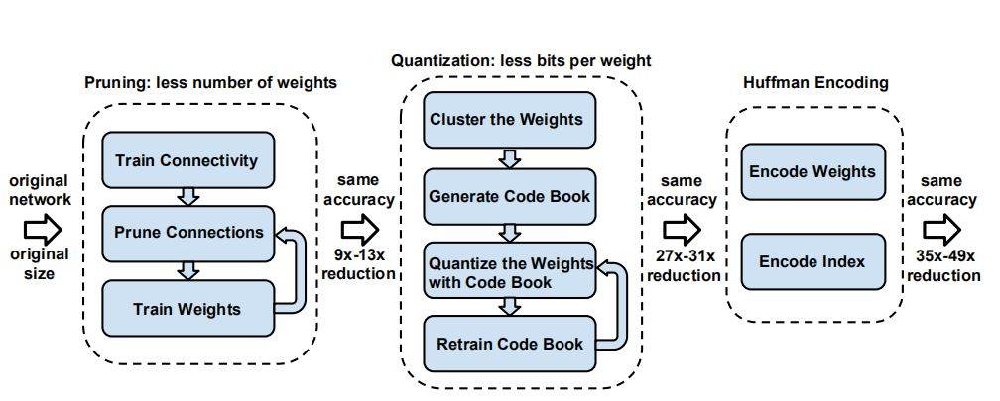
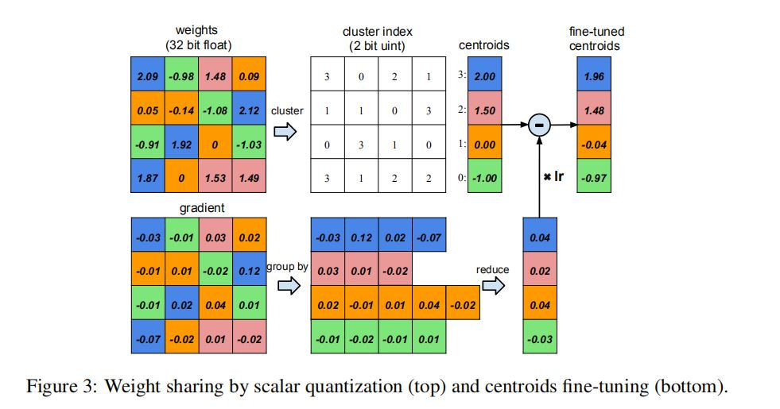
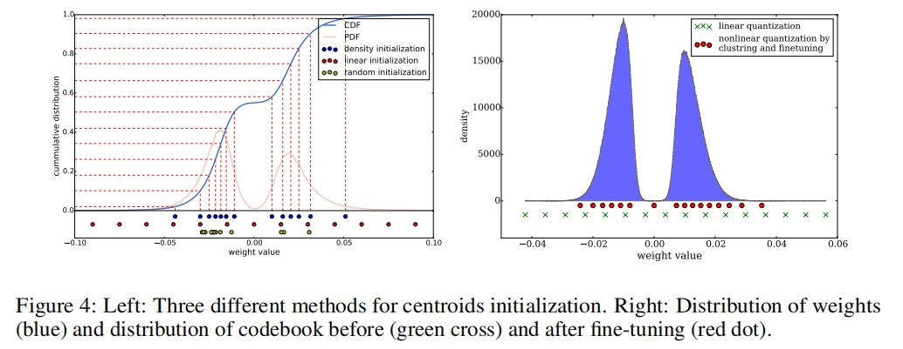
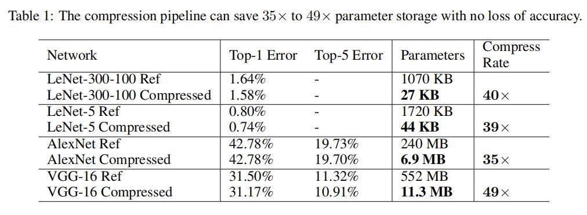
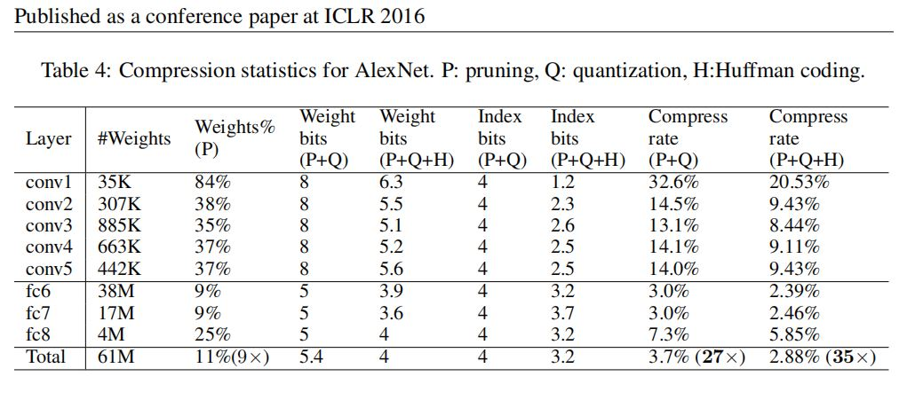
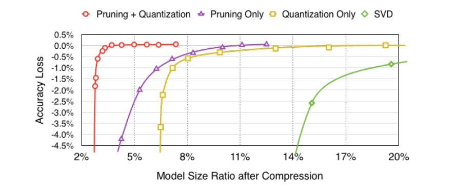

压缩、量化与编码
基于上一篇文章的基础上Learning both Weights and Connections for Effificient Neural Networks，这篇文章中的”deep compression” 主要有三个步骤，pruning, trianed quantization and Huffman coding.在不影响精度的情况下，这三步能够压缩网络大小35x到49x。
之前的剪枝能够实现9x到13x的效果，随后的量化将FLP32量化为INT5,实现了进一步的压缩。
流程图如下：

Introduction
在移动端部署要考虑的问题
- 网络规模大小，能不能放进片上SRAM
- 功耗，存取数据(占比最大)、数值计算
如45nm CMOS的存储计算设备，一次浮点加法消耗0.9pJ，32bit 的SRAM存取消耗5pJ，32bit DRAM存取消耗640pJ。以一个有1000000个连接的网络为例，以20HZ的频率内存存取，需要的功率为$ (20H_z)(1G)(640pJ) = 12.8W$
深度神经网络在移动端部署会带来很多好处，如更好的隐私保护，占用更少的网络带宽，以及实时处理。
Trained Quantization and weight sharing
这一步作者通过参数量化，及共享权重/梯度进一步压缩。通过聚类算法相同或相近的值共享同一值来表达，减少所用的存储空间。

其中压缩率r可用下式表示：
$r = \frac{nb}{nlog_2(k)+kb} $
n为连接数，b为原位宽(flp32),k为聚类的类数，$log_2(k)$ 为用来表达该类的索引的位宽。
权值共享
是在网络完全训练之后，通过对每一层的权值进行聚类实现的(在不同层之间没有权值共享)。通过最小化不同类的类间距，公式如下
$arg \quad min \sum_{i=1}^{k} \sum_{\omega{\in} c_i}^{}|\omega-c_i|^2$
初始化聚类中心
实验了三种中心初始化方法，随机、基于概率密度、线性
由于线性初始化能囊括所有范围的值，在参数中占少数的较大的参数对于模型的整体性能影响至关重要，随机或基于概率的中心初始化对于这些少量的大参数“照顾步骤”， 因此线性初始化效果最好。

哈夫曼编码
常用在无损压缩的最佳预编码，信息熵大的编码位数少，信息熵小的编码位数大。
实验结果
4种网络，两类数据集，caffe框架。量化及参数共享是通过维护一个存储这共享的权重的’codebook’结构实现的。哈夫曼编码在所有训练过程完成后进行。
实验结果如下

在AlexNet上的实验结果

结果讨论
和其他方法相比较，pruning+quantization的组合效果更好，比他们单打独斗效果更好。

- 在硬件上的加速及功耗效率


- 权重、索引(index)及 codebook所占比重

- 与其他论文中的结果比较